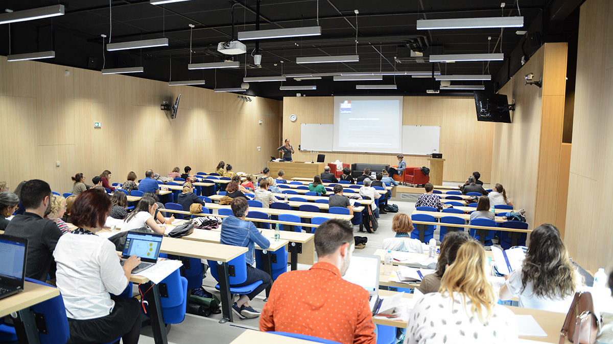
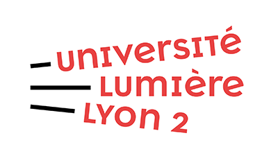
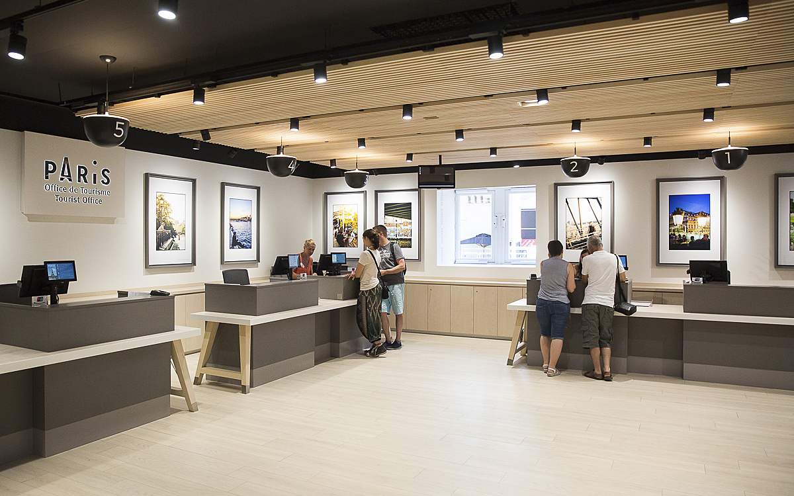

Je suis actuellement étudiante en troisième année de licence « Métiers culturelles parcours Tourisme ». À la suite de l’obtention de mon baccalauréat économique et social j’ai réalisé une première année de licence en géographie. Je me suis ensuite réorienté dans mon enseignement de mineure tourisme. Mon attrait pour la culture et le patrimoine dans le domaine professionnel est apparu à la suite de la réalisation d’un job saisonnier au cloître de la cathédrale du Puy-en-Velay. J’ai occupé cet emploi durant trois saisons estivales. J’ai également réalisé un stage en deuxième année de tourisme dans le monument Rocher saint Michel d’Aiguilhe, qui m’a fait acquérir des compétences reliées aux innovations touristiques dans le domaine du patrimoine culturel.
J’ai un esprit curieux, j’aime acquérir de nouvelles connaissances, voyager et participer à des projets variés. Je pratique plusieurs types de sports et j'aime réaliser des projets personnels créatifs durant mon temps libre.
J’ai obtenu mon baccalauréat économique et social avec spécialité mathématique en 2019. J’ai ensuite réalisé une première année en Licence de Géographie et aménagement du territoire avec mineur tourisme. J’y ai acquis des notions de cartographie, démographie, géomorphologie et aménagement de territoire.
Suite à ma réorientation en licence de tourisme, j’ai acquis des notions de droit, d’histoire du tourisme, de gestion de projet, d’histoire de l’art, de communication et dans l'utilisation de certains outils numériques.
Ce stage de quatre semaines m’a permis de réaliser des missions d’accueil, billetterie, boutique et d’information aux touristes. J’ai participé à la réalisation d’un forum de tourisme, aux visites guidées et aux premières étapes de préparation d’un projet d’audioguide.
Savoirs et savoir faire
J'ai appris à ...
Accueillir des visiteurs
Je suis capable d’accueillir des visiteurs à l’entrée d’un monument et de leur fournir des informations complètes quant au contenu de la visite.
Emploi Cloître de la cathédrale du Puy-en-Velay
Utiliser les logiciels de caisses
Je connais le fonctionnement des deux logiciels de caisses les plus utilisés dans le monde du tourisme. J’ai également la capacité d’ouvrir et de fermer une caisse en autonomie totale.
Stage Rocher Saint-Michel d'Aiguilhe
Reseigner sur l'offre touristique
Je suis capable d’informer le touriste sur les lieux touristiques environnant en prenant en compte ses objectifs de visites.
Emploi Cloître de la cathédrale du Puy-en-Velay
Lors de l’organisation d’un projet ou d’un événement touristique, je suis capable de calculer un budget complet pour sa réalisation concrète.
Projet de voyage caritatif en Italie (PDF)
Elaborer un projet d'animation
Je suis capable de participer à l’élaboration d’un projet d’accompagnement de visite guidée.
Stage Rocher Saint-Michel d'Aiguilhe
Compétences numériques
Suite Office
Utilisation des outils de traitement de texte, de présentations et de tableurs.
Les études dans le domaine du tourisme sont en adéquation avec mes aspirations professionnelles. Le tourisme comprend un ensemble de compétences variées applicables dans plusieurs catégories de métiers touristiques. Ayant une grande curiosité, j’ai pour objectif de découvrir plusieurs aspects du tourisme avant de choisir mon avenir professionnel.

Masters ...
Patrimoines : valorisation touristique et récréative : Ce master vise à acquérir des compétences en marketing territorial et dans la valorisation du patrimoine dans le cadre des aménagements touristiques et de loisirs. Cette formation contient une polyvalence grâce à une formation pluridisciplinaire dans laquelle je me projette complètement pour étudier et évoluer. Il y a aussi un aspect de développement du tourisme durable qui m’intéresse fortement dû à l’avenir du milieu touristique.
L’apprentissage de l’aménagement d’espace touristique, sur les acteurs du tourisme, les gestions et la valorisation du territoire regroupe les aspects du tourisme qui m’intéresse en particulier dans le milieu du tourisme. Tous les aspects les plus adaptés à mes aspirations y sont regroupés.

Management et design du tourisme en transitions : Ce parcours propose une formation sur les techniques de management et de gestion des structures touristiques. L’objectif est de savoir mettre en place une transition des entreprises touristiques (durable, stratégique et technologique).
Cette formation est complète et regroupe les compétences touristiques qui me correspondent. Elles demandent une grande polyvalence par la compréhension globale d’un environnement, la protection de son patrimoine, et le développement d’un tourisme plus durable.
Les compétences acquises lors de cette formation sont essentielles pour le développement durable dans le domaine du tourisme qui tend à être plus important avec le temps.
Elle regroupe l’aspect économique, numérique et la préservation des territoires qui sont inévitables dans les métiers du tourisme aujourd’hui.
Management des Destinations Touristiques : Cette formation donne un apprentissage approfondi en gestion et management des divers secteurs de l'industrie du tourisme lié aux destinations touristiques.
Ayant l’esprit curieux et organisé, les gestions et le management sont des matières ou j’ai toujours su avoir une réflexion et pris du plaisir à appliquer.
C’est un parcours qui correspond à mes attentes dans le domaine touristique, offrant des possibilités de projet avec une innovation permanente et des défis quant aux problématiques soulevées.

Professions ...
Agent de développement touristique : Le poste d’agent de développement touristique consiste à la valorisation des territoires. Les missions attribuées aux agents demandent une grande polyvalence, par la pluridisciplinarité qu’elles exigent. Cet agent a pour rôle d’analyser son territoire pour en découvrir les atouts et les freins à son attractivité touristique. J’aime cet aspect du tourisme car il demande une analyse du territoire pour la création d’une nouvelle attractivité ou l’amélioration de celle-ci.
Chef de produit touristique : Les missions du chef de produit sont nombreuses à correspondre à mes attentes pour mon futur emploi. Étant chargé de créer des circuits de tours opérateurs, il recherche sans cesse de nouvelles bonnes affaires et de nouvelles prestations attractives pour le touriste. Ce métier permet de voyager quelques mois dans l'année et de faire preuve de renouvellement de ses produits continuellement. Les défis et la polyvalence dont fait preuve un chef de produit me plaisent particulièrement, il peut avoir certaine spécialité spatiale et peut changer de cadre de travail durant sa carrière.
Chargé de mission tourisme durable : J’ai un grand intérêt pour l’évolution durable du tourisme, qui prend de plus en plus de place avec les années. Le chargé de mission tourisme durable à une polyvalence quant aux différentes prestations touristiques dont il participe à la mise en place. Il imagine une nouvelle approche du tourisme en accord avec la problématique de durabilité, tout en ayant un objectif d’attractivité. Cette problématique est primordiale et demande des idées innovantes.